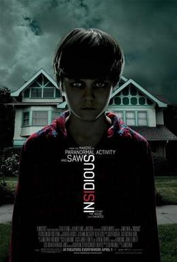
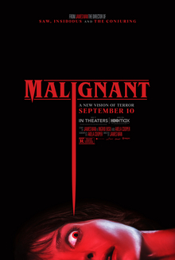

Favorite Horror Movies
The Conjuring

The Conjuring is a 2013 American supernatural horror film directed by James Wan and written by Chad Hayes and Carey W. Hayes. It is the inaugural film in The Conjuring Universe franchise.[4] Patrick Wilson and Vera Farmiga star as Ed and Lorraine Warren, paranormal investigators and authors associated with prominent cases of haunting. Their purportedly real-life reports inspired The Amityville Horror story and film franchise.[5] The Warrens come to the assistance of the Perron family, who experienced increasingly disturbing events in their newly occupied farmhouse in Rhode Island in 1971. Development of the film began in January 2012, and reports confirmed Wan as the director of a film entitled The Warren Files, later retitled The Conjuring. Production commenced in Wilmington, North Carolina, in February 2012, and scenes were shot in chronological order. The Conjuring was released in the United States and Canada on July 19, 2013, by Warner Bros. Pictures and New Line Cinema. It received positive reviews from critics, who praised the performances, direction, screenplay, atmosphere, and musical score. It grossed over $319 million worldwide against its $20 million budget. A sequel, The Conjuring 2, was released in 2016.
Insidious
Insidious is a 2010 supernatural horror film directed and co-edited by James Wan, written by Leigh Whannell, and starring Patrick Wilson, Rose Byrne, and Barbara Hershey. It is the first installment in the Insidious franchise and the third in terms of the series' in-story chronology. The story centers on a married couple whose boy inexplicably enters a comatose state and becomes a vessel for a variety of demonic entities in an astral plane. Insidious had its world premiere on September 14, 2010, at the 2010 Toronto International Film Festival (TIFF) and received a wide theatrical release on April 1, 2011, by FilmDistrict. The film is followed by two sequels, Insidious: Chapter 2 (2013), Insidious: The Red Door (2023); and two prequels, Insidious: Chapter 3 (2015) and Insidious: The Last Key (2018).
Annabelle

Annabelle is a 2014 American supernatural horror film directed by John R. Leonetti, written by Gary Dauberman and produced by Peter Safran and James Wan. It stars Annabelle Wallis, Ward Horton, and Alfre Woodard. Principal photography began in January 2014 in Los Angeles. It premiered at the TCL Chinese Theatre in Los Angeles on September 29, 2014,[3] and was theatrically released in the United States on October 3, 2014, by Warner Bros. Pictures and New Line Cinema.[4] The film was inspired by a story of a doll named Annabelle by Ed and Lorraine Warren.[5] It is a spin-off and prequel to the 2013 film The Conjuring, and was announced shortly after the release of that movie, due to to its worldwide box office success and positive reception of the depiction of the doll. Annabelle received negative reviews from critics, with many feeling the film was inferior to its predecessor, but it was praised for its atmosphere. It was a major box office success, grossing over $257 million against its $6.5 million production budget. A prequel, titled Annabelle: Creation, was released on August 11, 2017. A sequel, titled Annabelle Comes Home, was released on June 26, 2019.
The Nun

The Nun is a 2018 American gothic supernatural horror film directed by Corin Hardy and written by Gary Dauberman, from a story by Dauberman and James Wan.[2][3] It serves as a spiritual spin-off to The Conjuring 2 and is the fifth installment in The Conjuring shared universe. The film stars Taissa Farmiga, Demián Bichir and Jonas Bloquet, with Bonnie Aarons reprising her role as the Demon Nun, an incarnation of Valak, from The Conjuring 2. The plot follows a Roman Catholic priest and a nun in her novitiate as they uncover an unholy secret in 1952 Romania. It is followed by a sequel The Nun II, released in 2023. Warner Bros. Pictures and New Line Cinema announced The Nun, a spin-off film to The Conjuring 2, which had opened five days earlier, with Safran and Wan producing. The initial script for the film was written by David Leslie Johnson. Hardy had signed on to direct The Nun with a new screenplay from Wan and Dauberman. Principal photography began in May 2017 in Bucharest, Romania, and during filming, the set was blessed by an Eastern Orthodox priest.[4] The Nun was released in the United States on September 7, 2018, by Warner Bros. Pictures. Critics praised its performances and atmosphere, but criticized its weak narrative and inconsistent logic. It grossed $366 million worldwide, becoming the highest-grossing film of the series.[5] In 2023, a sequel The Nun II, was released with Michael Chaves directing and James Wan and Peter returning as co-producers.
Malignant
Malignant is a 2021 American horror film directed by James Wan from a screenplay by Akela Cooper, based on a story by Wan, Ingrid Bisu, and Cooper.[4] The film stars Annabelle Wallis as a woman who begins to have visions of people being murdered, only to realize the events are happening in real life. Maddie Hasson, George Young, Michole Briana White, and Jacqueline McKenzie also star. Malignant was theatrically released in the United States on September 10, 2021, by Warner Bros. Pictures and was also available to stream on HBO Max.[5] The film grossed $34 million and received mostly positive reviews from critics.